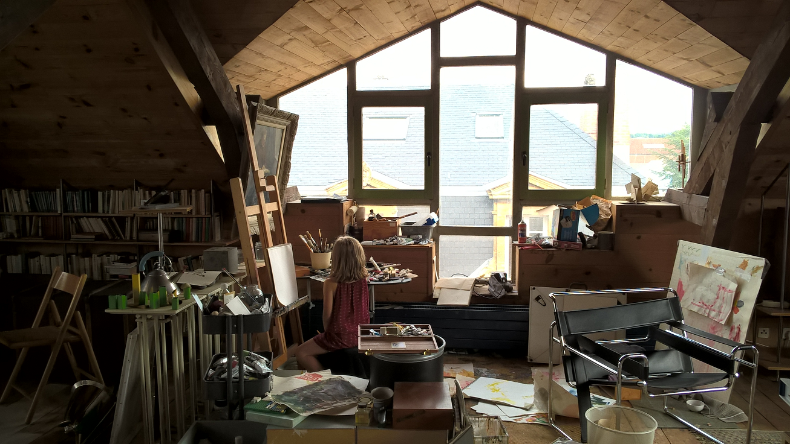
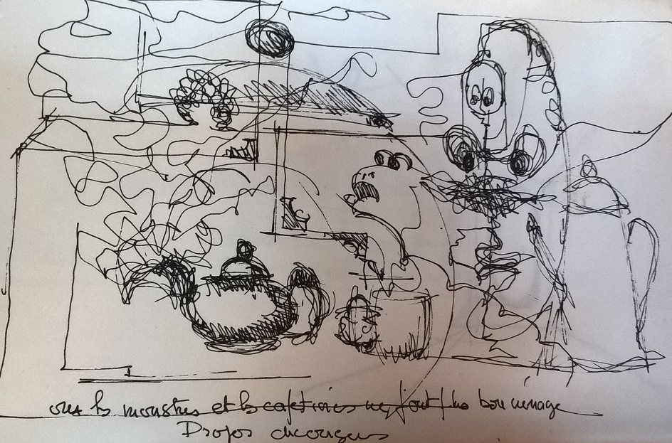

Histoire de peinture¶
Chez moi, on écrit sur les murs. Les idées sont faites pour être dessinées quelque part et il est impossible de rester propre. Les couleurs débordent sur les vêtements, les mains, le front, les joues. Comme dans ce livre pour enfants :

Mais c’est un peu comme ça que j’ai grandi. Les notes sont une chose, mais raconter ce qui vous fait vibrer, que ce soit un théorème de maths, la courbe d’un bâtiment, et il faut s’exercer, et encore s’exercer jusqu’à transformer sa maison son atelier.
C’est la pièce de la maison que je préfère, un joyeux espace créatif où tout y est rangé selon les idées de la veille. Rien n’est pire que de les perturber avec un chiffon blanc et une éponge mouillée.
Aucune oeuvre n’est vraiment achevée, certaines nous ont épuisés jusqu’à ce que plus aucune idée nouvelle ne vienne les altérer. Il reste alors tous ces bouts de dessins inachevés et imparfaits qui servent de terreau à de nouvelles pensées.